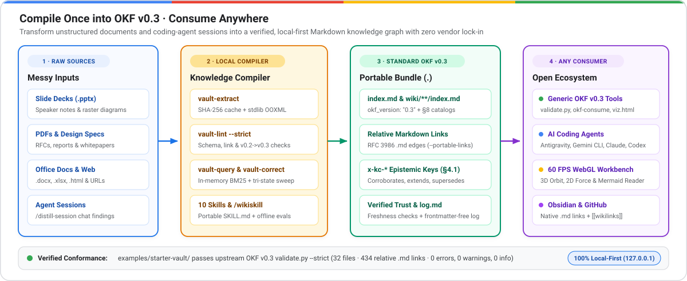
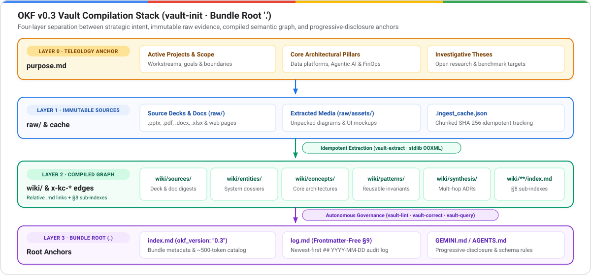

Compile documents and agent sessions into a verified OKF v0.3 knowledge graph.
An open-source, local-first Python CLI and portable agent plugin that turns slide decks, PDFs, Office docs, and coding sessions into a standard Markdown wiki readable by generic OKF tools, AI coding agents, GitHub, Obsidian, and a built-in 60 FPS 3D WebGL workbench.
Try the Live 3D WebGL Starter Vault
This interactive preview is compiled directly from examples/starter-vault/ using vault-graph --export. Drag to orbit, click any node to read its OKF v0.3 metadata, inline SVG Mermaid diagrams, and GFM tables, or open the in-memory Search Hub.
Compile Once into OKF v0.3, Consume Anywhere
Plain UTF-8 Markdown with RFC 3986 relative .md links, frontmatter-free wiki/**/index.md catalogs (§8), and namespaced x-kc-* epistemic extensions (§4.1).

| Consumer | What Works Out of the Box |
|---|---|
| Generic OKF v0.3 Tools | validate.py --strict, okf-consume, and viz.html see the full link graph (bundle_root: ".", relative .md links, wiki/**/index.md, and x-kc-* keys). |
| AI Coding Agents | Antigravity, Gemini CLI, Claude Code, Codex, and Cursor load ~500-token progressive indexes plus 10 portable SKILL.md workflows. |
| Built-In 60 FPS WebGL Workbench | Local loopback server (127.0.0.1:8765) with 3D Orbit, 2D Force, inline SVG Mermaid & GFM table Reader, in-memory BM25 Search Hub, and single-file HTML export. |
| Obsidian & GitHub | Native clickable Markdown links on GitHub and in Obsidian, with full backward compatibility for legacy [[wikilinks]] and OKF v0.2 vaults. |
60-Second Quick Start
Requires Python >= 3.10 and Git. No accounts, API keys, or external databases needed.
git clone https://github.com/GoogleCloudPlatform/knowledge-compiler.git
cd knowledge-compiler
python3 -m pip install -e ".[extract]"
# Audit strict OKF v0.3 conformance, relative Markdown links, and footnotes
vault-lint examples/starter-vault --strict
# Query with zero-index-file Okapi BM25 ranking
vault-query "BigQuery partition pruning" --vault examples/starter-vault
# Launch the interactive 2D/3D WebGL Workbench (http://127.0.0.1:8765)
vault-graph examples/starter-vault# Scaffold a fresh OKF v0.3 vault (bundle root '.', compiled concepts in wiki/)
vault-init --target ~/KnowledgeVault
# Extract a slide deck, PDF, Office doc, or web page into raw/ (SHA-256 cached)
vault-extract /path/to/architecture-deck.pptx --vault ~/KnowledgeVault
# Install portable SKILL.md workflows and optional opt-in Git sync hooks
kc-install-plugin
vault-hooks enable# Upgrade an OKF v0.2 vault (index.md, log.md, bundle paths, x-kc-* keys, wiki/**/index.md)
vault-lint ~/KnowledgeVault --fix --migrate-v03
# Optional: convert Obsidian [[wikilinks]] into portable OKF v0.3 relative Markdown links
vault-lint ~/KnowledgeVault --fix --migrate-v03 --portable-links10 Portable Agent Skills and CLI
Invoke via slash commands in your coding agent or run deterministically in terminal and CI workflows.
| Capability | Agent Skill | CLI Command | What It Does |
|---|---|---|---|
| Multimodal Ingestion | /ingest |
vault-extract |
Unpacks .pptx, .pdf, .docx, .xlsx, .html, and URLs with SHA-256 caching and a stdlib OOXML fallback. |
| Session Distillation | /distill-session |
Agent workflow | Compiles newly established entities, architectural decisions, and bug fixes from your chat trajectory into OKF notes. |
| In-Memory BM25 Search | /vault-query |
vault-query |
Multi-field Okapi BM25 ranking with duplicate detection (--check-duplicate) and zero index files on disk. |
| Strict OKF Linting | /vault-lint |
vault-lint |
Checks OKF v0.3 / v0.2 schemas, relative .md links, [[wikilinks]], drift, v0.3 migration, and --portable-links. |
| Tri-State Fact Sweep | /vault-correct |
vault-correct |
Safe plan-and-apply sweep updating the canonical note, refactoring living restatements into links, and preserving historical sources. |
| 60 FPS WebGL Graph | /vault-graph |
vault-graph |
Serves the local 3D Orbit / 2D Force graph, inline Mermaid/table Reader, and Search Hub, or exports standalone offline HTML. |
| Sanitized Sharing | /vault-share, /vault-pull |
vault-sync-patterns |
De-identifies private entities and local paths before sharing patterns to a team Git repo (--open-pr) and pulls upstream updates safely. |
| Closed-Loop Skill Evals | /wikiskill |
vault-wikiskill-eval |
Clusters redacted local tool-error traces and gates SKILL.md patches with deterministic offline Asymmetric Rollback evaluation. |
4-Layer Vault Architecture & Verifiable Offline Proof
Every note, cache, and graph view stays strictly on your local filesystem. You can verify the offline guarantee directly in one command.

Run the bundled offline gate, which monkeypatches socket.socket to raise on any outbound network attempt across vault-init, vault-lint, vault-query, vault-correct, and vault-graph:
python3 -m unittest tests.test_v1_release_gates.TestV1ReleaseGates.test_gate1_offline_plane1_socket_blocked
- All 3 lifecycle hooks ship disabled by default and require explicit opt-in via
vault-hooks enable. - Explicit user-initiated network calls only: HTTP(S) URLs passed to
vault-extract,vault-lint --check-okf-upstream,vault-sync-patterns share --open-pr, or opt-in Gitoriginsync hooks.